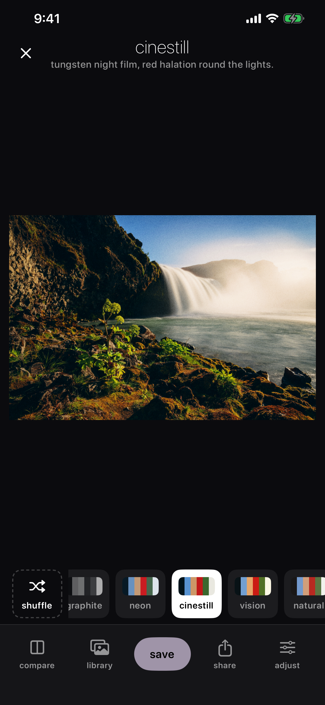
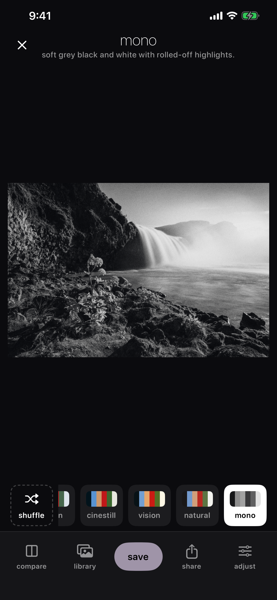
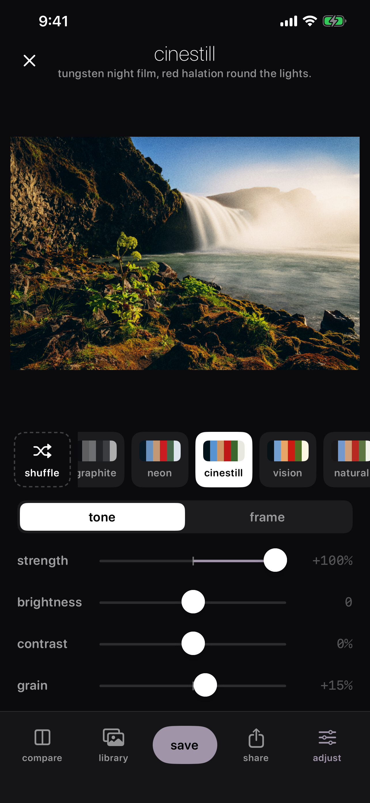
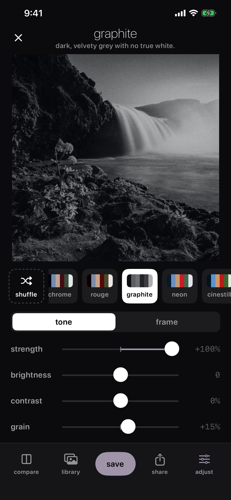
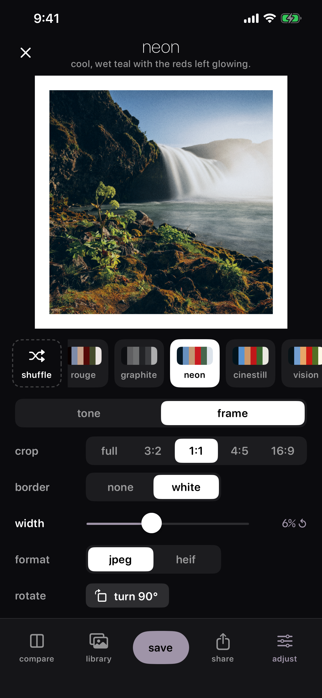
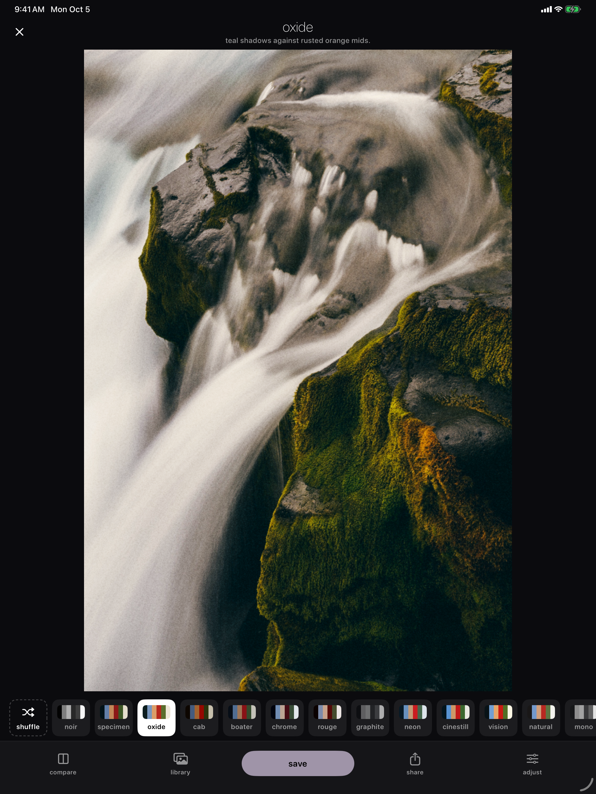
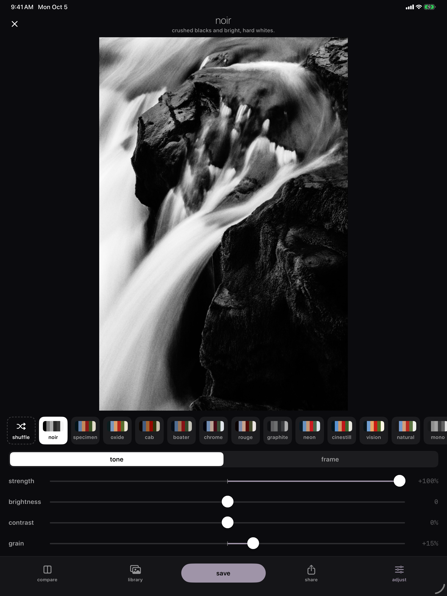

Veiled
A camera that shoots the look, not just the photo.
A camera that shoots the look, not just the photo.
Veiled is a camera with its look baked in. Pick one of thirteen hand-tuned looks — noir, cinestill, oxide, chrome, and more — and shoot straight into it, or bring in a photo from your library and give it the same treatment. Crop to a classic frame, add a white border, and save it to its own Veiled album.
iPhone





iPad


From soft mono and crushed noir to tungsten cinestill halation, each tuned by eye, with Shuffle to try one at random.
Use it as your camera, or pull any photo from your library and restyle it.
Strength, brightness, contrast, and grain, then crop to 3:2, 1:1, 4:5, or 16:9 with an optional white border.
Finished photos save to a Veiled album in Photos as JPEG or HEIF, with compare to see the before.
Keep Exploring
Back to the photo apps